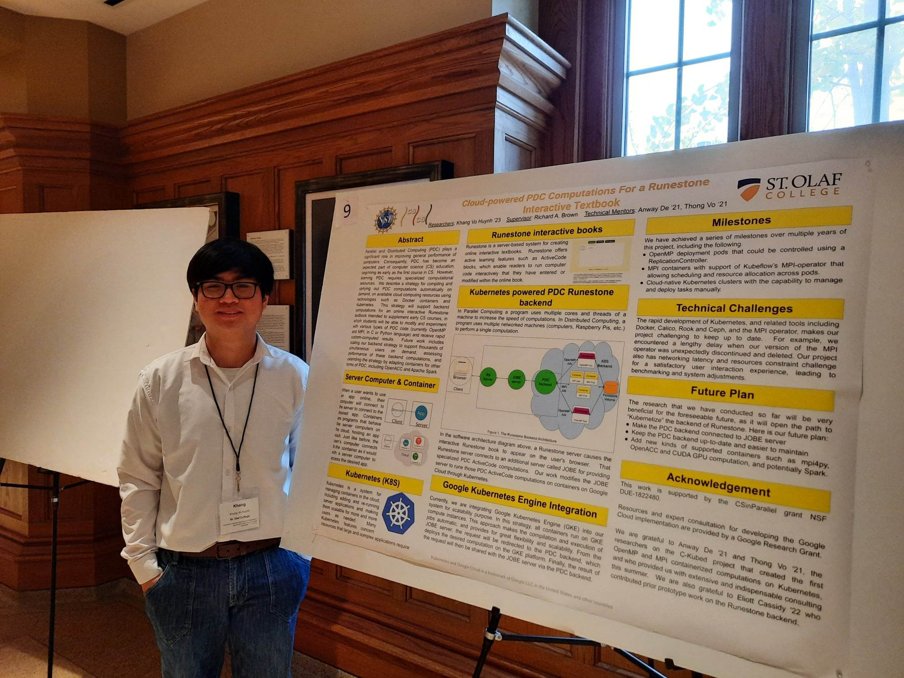

Research Portfolio
Khang Vo Huynh
I am an international student from Viet Nam and a Computer Science Ph.D. student at The University of Virginia - Charlottesville (UVA) advised by Dr. Lu Feng, after graduating from St. Olaf College.
My work is centered on reliable, robust, and adaptive AI-enabled cyber-physical systems, with deep interests in Formal Methods theory and application in Controller Synthesis, Large Language Models, and Vision Language Action models. My research specifically focuses on enabling AI models to have safety reasoning as well as creating a framework to monitor safety issues in deploying such systems.
Last update: April 2026

News & Updates
Recent research milestones
-
April 2026
"A Peano Coincidence" was published at Journal of Mathematical Analysis and Applications. [Co First-Author]
-
December 2025
Preprint version of the paper "Optimization-Based Robust Permissive Synthesis for Interval MDPs" is available on ArXiv. [First Author]
-
June 2023
"Efficiently Filling Space" was published at Rocky Mountain Journal of Mathematics. [Co First-author]
-
2022
Delivered a presentation, titled "Strategic Awareness of Surroundings to Reduce Network Disruption while Maximizing Coverage in Multi-Robot Exploration", at Midstates Physical Sciences, Math and Computer Science Undergraduate Research Symposium 2022.
-
2022
Presented a poster, titled "Cloud-powered PDC Computations For a Runestone Interactive Textbook", at Midstates Physical Sciences, Math and Computer Science Undergraduate Research Symposium 2022.
-
July 2022
"Finding the Keys to Peano Curve" was published at Acta Mathematica Hungarica. [Co First-author]
-
2022
Presented my work, "Finding the Keys to Peano Curve", at 22nd Annual Mathematics on the Northern Plains.